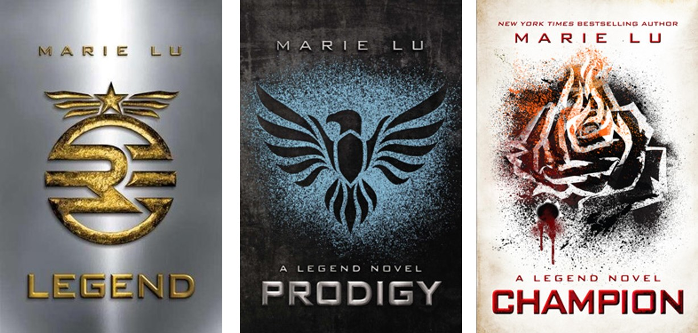

Never will I ever recommend a bad book. Rest assured these books will be holding you in a chokehold when your finished. These books will either leave you in tears or floating in a boat of happiness. Some may even leave you unsatisfied or in a slump but a good one.
I wouldn't say fantasy is my favourite genre but I love the adventure it takes you on, whether the plot itself but also with the characters. These books
There aren't many standolone fantasy novels so finding this book was a blessing. I can't really deal with fantasy books because of the long and intense world building that sometimes is the whole book. This books is a quick read for fantasy lovers in a slump who want something with a good plot, romance, found family trope, and a suberp main lead. Following the story of

By far my favourite fantasy series in the world, The Infernal Devices has it all. I think I have the right to say that this series has the best take in love triangles in the history of all books which is alot because I despise love triangles with a passion. These books that will have you begging to read it for the fist time again. The mortal instruments series was...interesting to say the least but I can assure you that it's worth it to read the first 3 books beofre this series just so you can have an understanding of the characters and showhunter world in general.

These books will get you bitting your nails in anticipation.

As I've said before I adore historical fiction so this series is by far my favourite mystery series.




Return to the
top of the page.